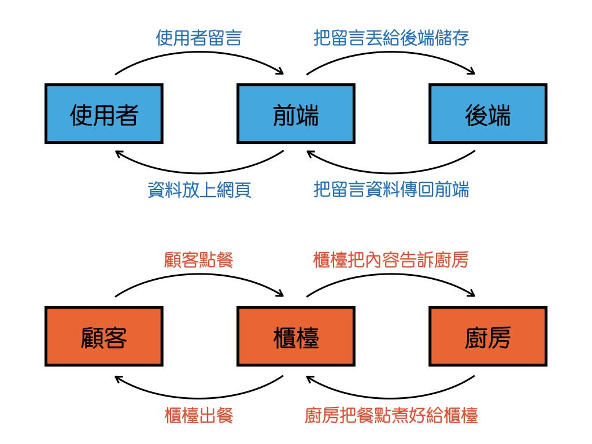

🌐 網頁前端是做甚麼的?
作者：Lan | 發表於 2025-07-27
前端工程師（Frontend Developer）主要負責網站的「視覺與互動」部分， 也就是使用者看得到、點得到的部分。
📸 前端工作示意圖
（圖片：示意圖，前端開發通常包含設計 UI、寫程式、測試互動效果。）
📋 前端開發主要做的事
- 🎨 **設計並製作網頁介面（UI）** — 讓網站看起來漂亮、易用。
- 📄 **使用 HTML 建立結構與內容** — 決定網站的骨架。
- 🎭 **使用 CSS 美化樣式** — 控制顏色、排版、動畫。
- ⚡ **使用 JavaScript 加入互動效果** — 例如按鈕、下拉選單、即時更新內容。
- 🔗 **與後端 API 溝通** — 取得資料、更新頁面。
🎥 教學影片
（影片來源：YouTube）
🚀 前端的延伸技能
除了基本的 HTML、CSS、JavaScript，前端工程師也常使用各種框架與工具， 例如：
- ⚛️ **React / Vue / Angular** - 主流前端框架
- 🎨 **Tailwind CSS / Bootstrap** - 快速套版工具
- 📦 **Webpack / Vite** - 打包與最佳化網站
✨ 前端日常小動畫

（GIF 來源：Giphy）